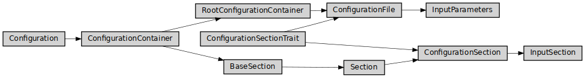

input_parameters
Full name: ase2sprkkr.input_parameters.input_parameters
Module class hierarchy

Description
Containers for configuration parameters of SPR-KKR task.
These configuration parameters are supplied to SPR-KKR executables as input files. The containers are also the objects, that take care about executing the SPR-KKR executables.
Functions
|
" Return the postfix, that is appended after the name of SPR-KKR executable. |
Classes
|
It holds the configuration values for a SPR-KKR task and run the task |
|
Input parameters sections has nothing special, yet. |